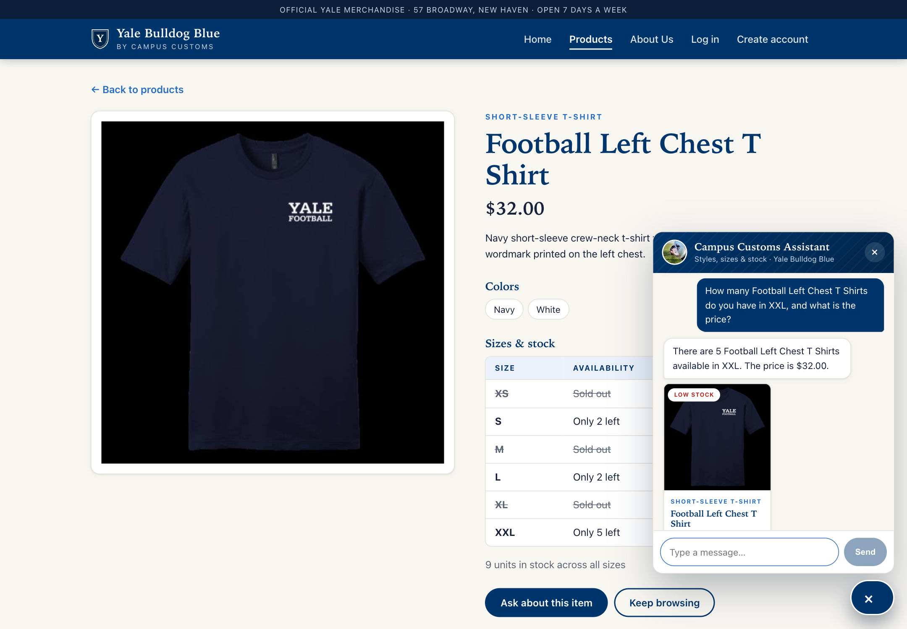
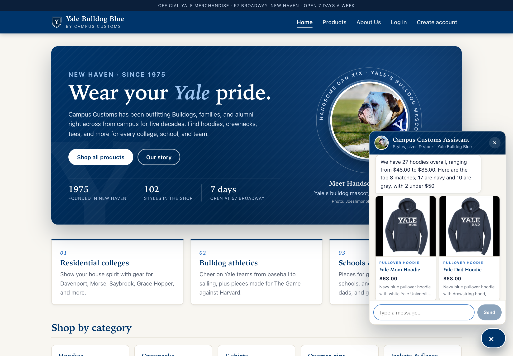
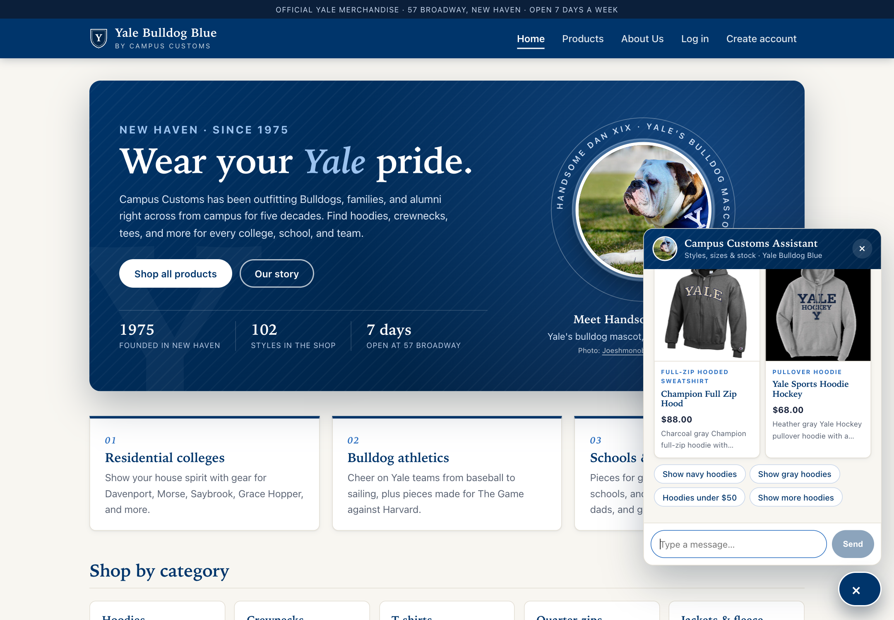
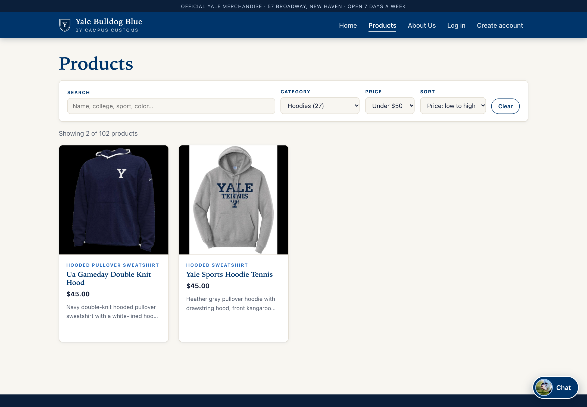

- 1. Chat inventory checkPASS — real stock and price
- 2. Dynamic search-result cardsPASS — 8 real hoodie cards
- 3. Problem 9 usability featurePASS — Products page filters
1. Chat inventory check
PASSThe chatbot answers that there are 5 Football Left Chest T Shirts in XXL at $32.00. Those are the exact values in the database, and they are also visible on the same screen in the product page's price and its size table ("XXL — Only 5 left"), which is rendered from the inventory table.
Shopper: How many Football Left Chest T Shirts do you have in XXL, and what is the price?
Assistant: There are 5 Football Left Chest T Shirts available in XXL. The price is $32.00.

get_stock_by_size(product="football-left-chest-t-shirt", size="XXL") and get_product_price (from the backend log).Database values for this product
| Size | Quantity in inventory |
|---|---|
| XS | 0 |
| S | 2 |
| M | 0 |
| L | 2 |
| XL | 0 |
| XXL | 5 |
Price in catalogue: $32.00.
2. Dynamic search-result cards
PASSAsking "What hoodies do you have?" makes the agent search the real catalogue (search_catalogue(category="hoodie")). The chat then renders product cards for the top 8 of the database's 27 hoodies, each with the correct image, garment type, name, price, and description. The reply's totals (27 hoodies, $45.00–$88.00 overall) match the database.
Shopper: What hoodies do you have?
Assistant: We have 27 hoodies overall, ranging from $45.00 to $88.00. Here are the top 8 matches; 17 are navy and 10 are gray, with 2 under $50.


All 8 cards shown, compared with the database
| # | Name | Price | Garment type | Image | vs. database |
|---|---|---|---|---|---|
| 1 | Yale Mom Hoodie | $68.00 | pullover hoodie | /media/products/yale-mom-hoodie.jpg | ✓ matches |
| 2 | Yale Dad Hoodie | $68.00 | pullover hoodie | /media/products/yale-dad-hoodie.jpg | ✓ matches |
| 3 | Yale Sports Hoodie Tennis | $45.00 | hooded sweatshirt | /media/products/yale-sports-hoodie-tennis.jpg | ✓ matches |
| 4 | Basic Hoodie Big Yale | $68.00 | pullover hoodie | /media/products/basic-hoodie-big-yale.jpg | ✓ matches |
| 5 | Volleyball Left Chest Hoodie | $68.00 | pullover hoodie | /media/products/volleyball-left-chest-hoodie.jpg | ✓ matches |
| 6 | Yale Aunt Hoodie | $68.00 | hoodie | /media/products/yale-aunt-hoodie.jpg | ✓ matches |
| 7 | Champion Full Zip Hood | $88.00 | full-zip hooded sweatshirt | /media/products/champion-full-zip-hood.jpg | ✓ matches |
| 8 | Yale Sports Hoodie Hockey | $68.00 | pullover hoodie | /media/products/yale-sports-hoodie-hockey.jpg | ✓ matches |
Clicking the first card opened /products/yale-mom-hoodie, the single-product page for "Yale Mom Hoodie" ($68.00).
3. Problem 9 usability feature: Products page search and filters
PASSChoosing Category = Hoodies, Price = Under $50, and Sort = Price: low to high narrows the 102-product catalogue to exactly the 2 hoodies under $50 in the database ("Showing 2 of 102 products"). The filters are kept in the page URL (/products?category=hoodie&price=under-50&sort=price-low).

Products shown (database: hoodies with price < $50)
| Name | Price | Garment type |
|---|---|---|
| Ua Gameday Double Knit Hood | $45.00 | hooded pullover sweatshirt |
| Yale Sports Hoodie Tennis | $45.00 | hooded sweatshirt |